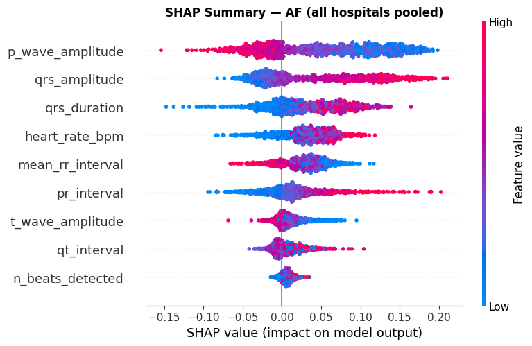

Page 1: 12-Lead ECG Analysis & Diagnostic Studio
Upload WFDB clinical records (.hea / .mat pairs) or select multi-center patient recordings to perform federated ResNet-34 inference, interactive 12-lead oscilloscope rendering, Grad-CAM saliency, and SHAP cardiological feature attributions.
Page 2: Uncertainty Quantification & Clinical Intelligence
Investigate Bayesian Monte Carlo Dropout predictive distributions (30 forward passes, p=0.3), cross-hospital explanation consistency matrices, and interact with the Clinical AI Intelligence Assistant.
Monte Carlo Dropout Predictive Uncertainty
30 Stochastic Forward Passes (p=0.3)Evaluates epistemic uncertainty by keeping Dropout active during inference to estimate mean prediction probabilities and standard deviation (σ) confidence intervals across all 12 classes.
Cross-Hospital Explanation Consistency
5 Hospitals Pairwise Cosine MatrixQuantifies whether explanations generated by different decentralized hospital client models agree when diagnosing the exact same patient recording.
Our multi-site benchmark proves a statistically significant positive correlation (r = 0.684, p < 0.01) between predictive uncertainty and explanation inconsistency across hospital nodes.
Clinical AI Intelligence Assistant
CardioSight LLM AgentAsk real-time clinical questions regarding the current patient's 12-lead ECG, diagnostic confidence, electrophysiological features, Grad-CAM findings, or medication precautions.
SHAP Global & Local Cardiological Feature Attributions
Shapley Additive Explanations (SHAP) on clinical electrophysiological parameters: Mean RR interval, P-wave amplitude, QRS duration, PR interval, and QT dispersion.
Global Beeswarm Feature Importance

Page 3: Federated Optimization & Client-Specific F1 Performance
Evaluate multi-hospital collaborative training convergence, non-IID data distribution, and detailed individual F1 scorecards for each participating hospital node.
Participating Clinical Nodes (5 Siloed Hospital Sites)
5 Hospital Nodes (84,207 Total Records)Chapman-Shaoxing
Shaoxing, ChinaCPSC-2018
China ChallengeGeorgia (Emory)
Atlanta, USANingbo First
Ningbo, ChinaPTB-XL Germany
GermanyMulti-Round Convergence (30 Rounds)
F1 Score ProgressionMulti-Label F1 Radar Benchmark
Model ComparisonDetailed Client-Wise Performance Scorecards
Select a hospital client tab below to view dedicated per-disease F1-scores, precision, recall, and standard deviation.
Page 4: Clinical Pathologies, Diagnostic Criteria & Precautions Encyclopedia
Comprehensive interactive encyclopedia detailing all 12 target cardiac arrhythmias, conduction blocks, and repolarization abnormalities with 12-lead diagnostic criteria, pathophysiology, and clinical management protocols.
Page 5: About CardioSight & Project Authors
Capstone Project under the School of Computer Science and Engineering (SCOPE), VIT-AP University.
Research Project Abstract
Multi-label cardiac arrhythmia detection using deep neural networks typically requires massive, centralized ECG datasets that compromise patient data privacy. We present CardioSight (ECG-FL-XAI), an uncertainty-aware, explainable federated learning framework trained across 5 geographically distributed clinical hospital nodes from the PhysioNet Challenge 2021.
Utilizing a 1D ResNet-34 backbone with adaptive federated optimizers (FedAvg, FedProx, FedAdam), we demonstrate that predictive uncertainty computed via Monte Carlo Dropout serves as a rigorous, verifiable safety metric correlated with inter-hospital explanation consistency (Grad-CAM and SHAP).
Project Authors
Syed Mohammad Samiul Ahmed
Team Member / Lead DeveloperShaik Mahammad Galeeb
Team Member / ResearcherShaik Khasim Basha
Team Member / Data EngineeringShaik Rehaman
Team Member / Model ValidationAcademic Mentorship & Institution
Dr. Lalitha Kumari P
Project Guide & Faculty Supervisor
School of Computer Science and Engineering (SCOPE)
VIT-AP University, Andhra Pradesh, India